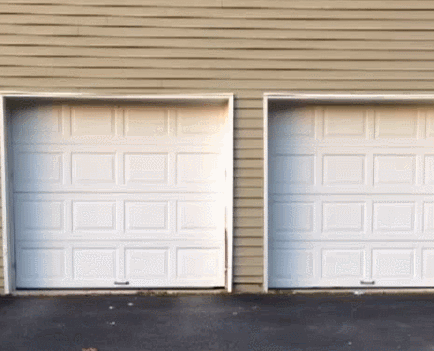

Lightweight and meaningful UIs with CSS
Or how to simply animate user interfaces and avoid bloat in the process.
:root {
--name: 'Nicolás Joel Engler';
--job: 'Full-stack Designer';
--company: 'Tienda Nube / Nuvem Shop';
--twitter: '@NicolasJEngler';
--email: 'hi@nicolasjengler.com.ar';
}
Animation nirvana
(without libraries)
- Popmotion
- Animate.css
- Velocity.js
- anime.js
- mojs
- wow.js
- GSAP
- Wicked CSS
- Tuesday
- CSS Shake
Animation nirvana
(without libraries)
Animation nirvana
(without libraries)
CSS
.popover-wrapper {
position: relative;
}
.popover {
position: absolute;
transform: scale(0);
opacity: 0;
transform-origin: 50% 100%;
transition: all .5s cubic-bezier(0.770, 0.000, 0.175, 1.000);
}
.popover-wrapper:hover .popover {
transform: scale(1);
opacity: 1;
}
Real-life movement

Real-life movement
Movement of objects in our world is rarely linear, most of them move with a certain variation in their motion and this happens because of different laws of physics, which is why objects in the web that move in a linear manner look odd or awkward.
Real-life movement
Transitions and animations can use timing functions, which basically are specifications for the speed curve of an animation. The speed curve is in charge of defining how an animation uses the defined time for the transition or animation. The following are possible timing functions:
CSS
.popover {
transition-timing-function: linear;
transition-timing-function: ease;
transition-timing-function: ease-in;
transition-timing-function: ease-out;
transition-timing-function: ease-in-out;
transition-timing-function: step-start;
transition-timing-function: step-end;
transition-timing-function: steps(int,start|end);
transition-timing-function: cubic-bezier(n,n,n,n);
transition-timing-function: initial;
transition-timing-function: inherit;
}
Real-life movement
For the previous demo, the popover on the right moved appeared awkwardly because the timing functions were the following:
CSS
.popover {
transition: all .5s cubic-bezier(0.770, 0.000, 0.175, 1.000);
}
.popover.no-easing {
transition: all .5s linear;
}
Real-life movement
What exactly is a cubic-bezier() function and how does it work? Well, the function defines a Cubic Bezier curve which consists of four points: x1, x2, y1, y2. x1 and y1 define a start for the curve, ending in a position defined by x2 and y2
Real-life movement
Understanding how a Bezier Curve works for CSS without visualizing it can be really tricky. Lea Verou, a front-end developer, speaker and author, created a handy tool to test out different curves.
http://cubic-bezier.com/Real-life movement
As you may have seen, besides the cubic-bezier() function, there's a possibility to use keywords like linear, ease, ease-in, or ease-out. These keywords work in the follwing way...
Real-life movement
linear == cubic-bezier(0,0,1,1)
Real-life movement
ease == cubic-bezier(.25,.1,.25,.1)
Real-life movement
ease-in == cubic-bezier(.42,0,1,1)
Real-life movement
ease-out == cubic-bezier(0,0,.58,1)
Real-life movement
ease-in-out == cubic-bezier(.42,0,.58,1)
Thank you!